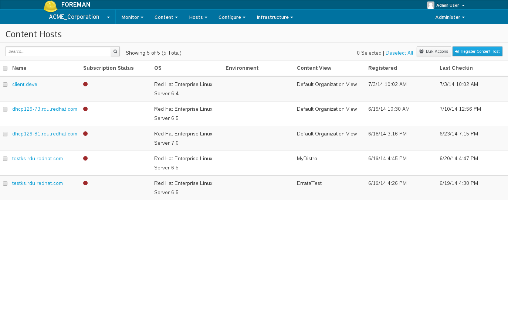
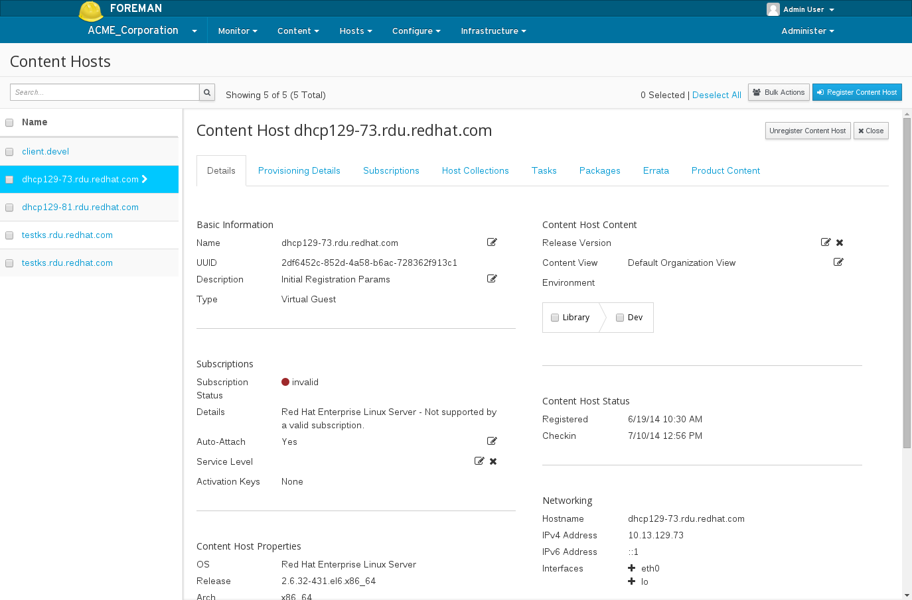
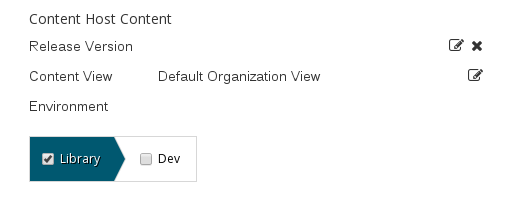
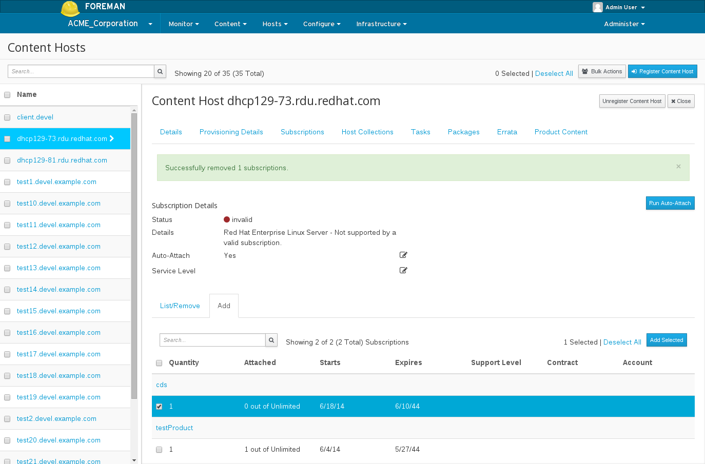
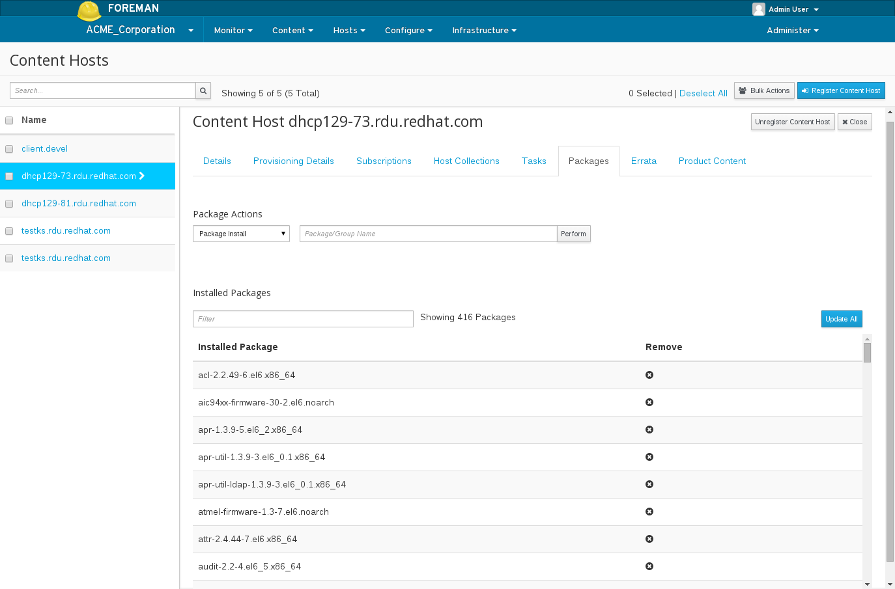
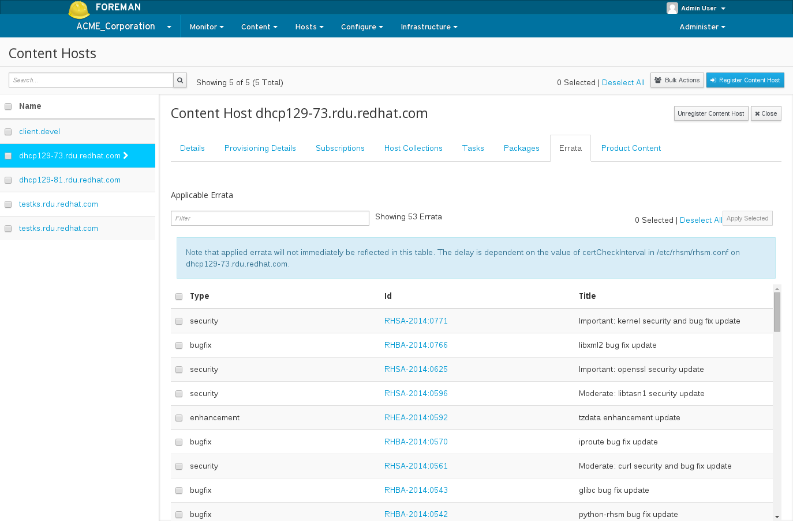
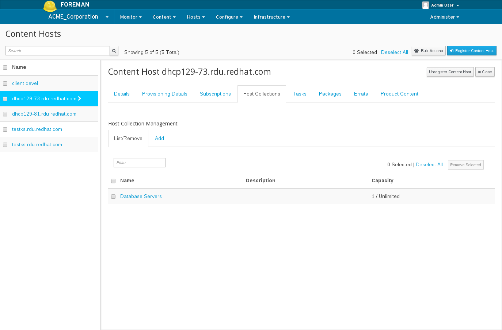
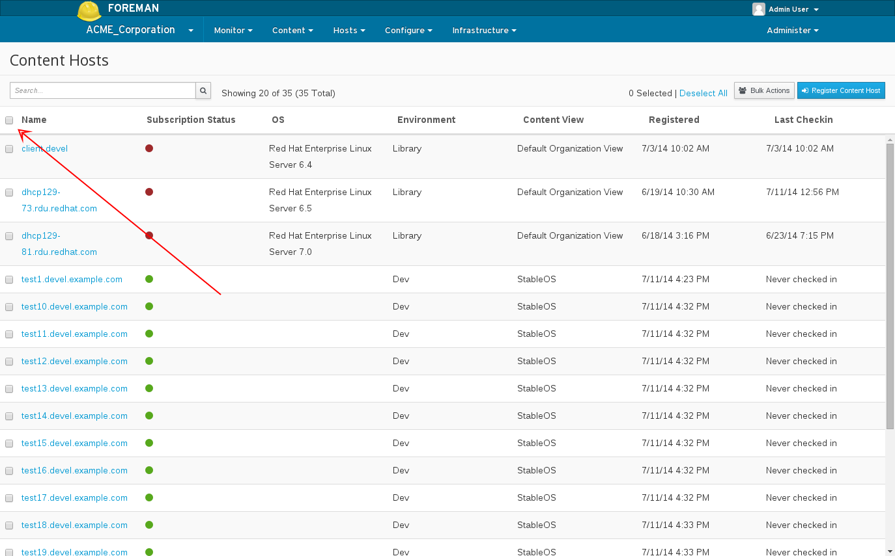
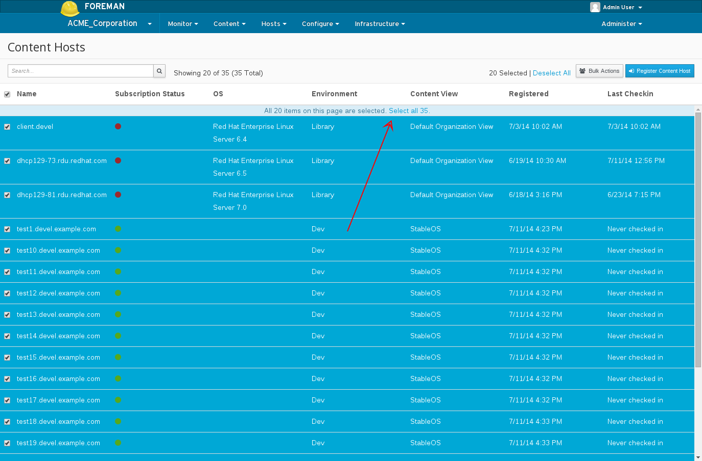

2.0: Content Hosts
Content Hosts
What is a Host?
A Host is a Foreman concept that represents a server/host/system/computer (whatever you want to call it). In addition to holding facts about the system, it:
- Stores which operating system the system should be running
- Stores which puppet classes should be assigned
- Stores which parameters apply to which puppet classes
- Allows you to re-provision the machine
What are Content Hosts?
Content Hosts are the part of a host that manages Content and Subscription related tasks.
As time goes on more and more of this functionality will be moved to the Host object. A Host’s Content Host:
- Stores which Products are assigned (i.e. which Repositories will the system pull content from)
- Initiates package install/upgrade/removal
- Determines which errata apply to a system
- Initiates errata installation
How is a Content Host registered?
Subscription Manager is the client for Katello that handles registration.
Installing Subscription Manager
Depending on your Operating System, for:
- RHEL, subscription-manager is installed by default
- Fedora, subscription-manager is available from the Everything repo for its release:
yum install subscription-manager - CentOS, enable the upstream subscription-manager repo and then install subscription-manager:
cat > /etc/yum.repos.d/sub-man.repo << EOF
[subscription-manager]
name=An open source entitlement management system.
baseurl=http://repos.fedorapeople.org/repos/candlepin/subscription-manager/epel-6/x86_64/
enabled=1
gpgcheck=0
EOF
yum install subscription-manager -y
Registering with Subscription Manager
First install the bootstrap rpm from your Katello server:
rpm -Uvh http://$KATELLO_HOSTNAME/pub/katello-ca-consumer-latest.noarch.rpm
Then register:
subscription-manager register --org=Default_Organization --environment=Library
Subscription manager will prompt for your username and password. You can also specify --username $USER --password $PASS on the command line.
Registering to a Content View
To register to Content View “MyView” in a “Devel” Lifecycle Environment:
subscription-manager register --org=Default_Organization --environment=Devel/MyView
Registering without using a username and password
Activation Keys allow you to register and consume content without using a username and password. To create an Activation Key see the Activation Key Guide
Once you have created an activation key, register with:
subscription-manager register --org=Default_Organization --activationkey=$KEY_NAME
Actions with registered Content Hosts
To see the list of your Content Hosts, navigate to Hosts > Content Hosts

Changing the Lifecycle Environment and Content View of a Content Host:
Navigate to the Content Host Details page, Host > Content Hosts > Click the name of the desired Content Host

Look in the upper right corner for the “Content Host Content”:

Then select the new Lifecycle Environment you desire, select the new Content View you desire, and click save.
Assigning a Content Host to a Product
In order for a Content Host to receive package updates and access Repositories hosted on Katello, it needs to be subscribed to a product.
Navigate to Hosts > Content Hosts > Select Content Host > Subscriptions > Click the “Add” tab

Check the checkbox under the Products you want to add and select “Add Selected” in the upper right.
To see existing attached Products, click the “List/Remove” tab. To remove a Product, select the checkbox under the desired Product in this list and click “Remove Selected”.
Package Management
To perform package actions on a singleContent Host, navigate to: Hosts > Content Hosts > Select Content Host > Packages

From here you can:
- See a list of installed packages
- Perform a yum install/update/remove of a Package or Package Group
- Update all packages (equivalent of running ‘yum update’)
View and Install Applicable Errata
If your synced Repositories contain Errata, you can use Katello’s Errata management to track and install Errata.
Navigate to: Hosts > Content Hosts > Select Content Host > Errata

To apply errata, search for the errata you want and select the checkbox beside each errata. Then click “Apply Selected” at the top right.
Change Host Collection Asssignments
To change Host Collection assignments for a Content Host, navigate to: Hosts > Content Hosts > Select Content Host > Host Collections

Bulk Actions
Katello provides the ability to perform actions on many Content Hosts at once such as:
- Package installation/upgrade/removal
- Listing and applying applicable errata
- Assigning Host Collections
- Changing Lifecycle Environment and Content View assignments
In order to use the bulk actions, perform whatever search you desire and select which Content Hosts you want to modify. If you want to select all Content Hosts from a search result, click the ‘checkbox’ above the table:

This will select all Content Hosts on that page (only the ones that are visible). To select all that correspond to that search query, notice a bar has now appeared:

Next select the ‘Bulk Actions’ button in the top right.
From here you can select the tab corresponding to any action you wish to perform.